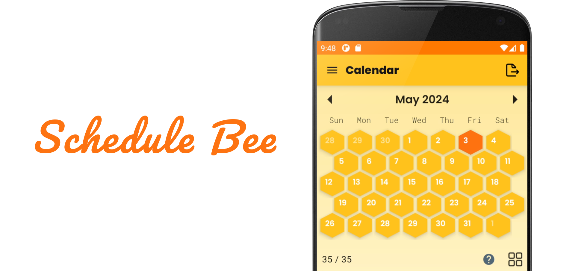
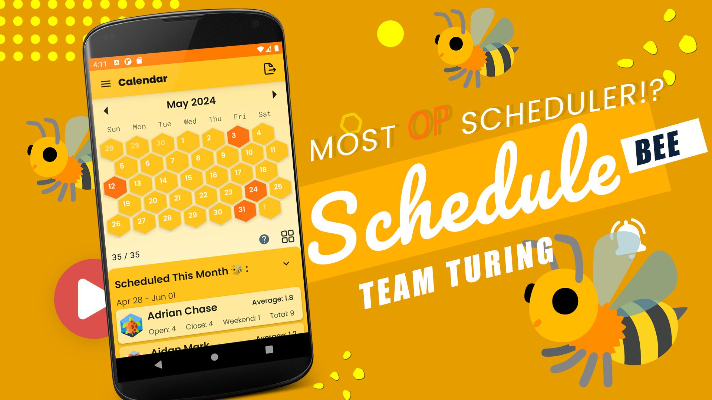

ScheduleBee
Kotlin · Jetpack Compose · Android · SQLite · Coroutines · Material Design · Figma
A mobile scheduling app designed to make complex staff scheduling feel simple, visual, and hard to break.
Built with a strong emphasis on UX clarity and correctness, ScheduleBee lets managers assign shifts, track availability, and export clean schedules without fighting the interface. The project focused on building something reliable under real constraints — small screens, strict requirements, and zero tolerance for bugs.

ScheduleBee is an Android scheduling app built for managers who need to create, adjust, and export staff schedules without fighting the interface. The project focuses on a problem that sounds simple until it is not: assigning the right people to the right shifts, keeping track of availability and qualifications, and making the finished schedule easy for both managers and staff to read.
Overview
The app is built around a calendar-driven scheduling workflow. Users can move through months and weeks, assign employees to shifts, attach notes to specific days, manage staff information, edit availability, and export the finished schedule as a PDF. The design leans heavily on visual status cues so users can understand the state of the schedule at a glance instead of digging through menus.
At a product level, the app is trying to make scheduling feel structured rather than chaotic. It keeps the important information close to the schedule itself: staffing status, qualifications, notes, shift counts, employee profiles, and availability all sit inside the same system instead of being spread across separate tools.
Want to see it in action? Click the thumbnail below to watch the demo video!

Core architecture
The application is built for Android using Jetpack Compose as the main UI framework. The interface was first prototyped in Figma, then translated into Compose for the final implementation. Persistent data is stored in SQLite, and background tasks are handled with coroutines so heavier operations such as exporting schedules do not block the UI.
PDF export is built with iText 7, which allows the app to generate schedule documents directly from the in-app state. Material Design principles are used as the baseline for the interaction model, but the final interface is more stylized than a stock Android app and leans into a distinctive honeycomb / beehive visual system.
Calendar-first scheduling
The main screen is the calendar, and most of the app is designed around that interaction model.
The monthly view calculates a full scheduling period by extending to the closest Sunday at the start and the closest Saturday at the end, so the calendar always covers complete weeks with no gaps or overlap. Each day is rendered with a staffing-state color system: - unassigned - understaffed - fully staffed - fully staffed busy day - outside-of-period
That color layer is important because it turns the schedule into something readable from a distance. A manager can tell immediately which days still need work and which ones are finished.
The calendar supports both a hex view and a standard grid view. The hex layout is the default and became one of the defining visual ideas of the app. It is not just decoration either; it gives the schedule a distinct identity while still letting the user scan a full month quickly.
Assignment workflow
Selecting a day opens the assignment menu from the bottom of the screen. That menu is where the actual scheduling happens.
From there, the user can: - choose a date - assign employees to shifts - mark a day as busy - search the employee list - sort employees - view qualifications directly on employee cards - attach notes to the day - jump into employee profiles when needed
Shift structure changes depending on the day: - weekdays have open and close - weekends use an all day shift - busy days add a third slot
The app also prevents certain invalid actions. For example, a busy-day shift cannot be removed if that shift slot is still filled. That kind of guardrail matters in scheduling software because a lot of mistakes happen through small UI actions that silently create bad state.
Qualification enforcement
One of the more important parts of the app is that it treats staff qualifications as part of the scheduling logic rather than just profile metadata.
Employees can carry different training statuses, and those qualifications are displayed directly in the scheduling interface. The point is not just to store that information, but to make it visible at the moment assignments are being made. The app also uses qualification-related logic in its testing and workflow design, which means the schedule is not just a visual planner; it is aware of whether the people being assigned are actually suited for the shift.
That is one of the parts that makes the project feel more like operational software and less like a generic calendar app.
Notes, status, and schedule clarity
Each day can include notes with a short title and a longer description. Those notes are not treated like throwaway comments. They are designed to survive into the exported schedule and become part of the actual document staff use.
The app is also careful about note deletion. Clearing a note requires an explicit save action rather than disappearing silently, which reduces accidental data loss.
Below the calendar, the app also shows schedule progress through a scheduled days counter, making it obvious whether the current month is complete or still missing coverage. That same idea carries into the weekly editor so users always know whether they are looking at a finished schedule or a partial one.
Weekly editor
The weekly editor is the fast-edit view of the system.
Instead of looking at the entire month, the user can navigate week by week inside the same scheduling period and work with more detailed day cards. This is useful when the manager wants to edit a specific week quickly without dealing with a full month at once.
The weekly editor also includes a small toolbox for bulk operations: - repeating the current week forward - clearing the current week - clearing the current month
The repeat logic is designed conservatively. It copies assignments into the next week without blindly overwriting existing scheduled employees. That makes it useful for recurring patterns without turning it into a destructive shortcut.
Staff directory and employee profiles
The staff directory is not just a flat contact list. It acts as the personnel layer for the rest of the scheduling system.
Each employee record can store: - first and last name - nickname - phone number - email - qualifications - notes - avatar - availability
Profiles can be viewed, edited, archived, and reactivated. The app also supports deactivating an employee without deleting them from the database. When an employee is archived, they disappear from normal scheduling flows and are removed from future shifts, but their data remains intact. That is a practical feature for real workplaces where staff come and go seasonally or temporarily.
The profile view also ties employee data back into the schedule by showing monthly shifts, availability, and notes in one place.
Availability system
ScheduleBee separates employee availability into its own editing flow rather than burying it inside the profile page.
Users can select an employee, open their availability, edit day-by-day availability, move between employees, and save those changes explicitly. The availability screen is built around quick traversal because that is the real-world use case: managers often need to move through several employees in a row while updating or checking availability.
That makes the app more than a shift placement tool. It handles both sides of the problem: - who is available - who is assigned
PDF export
Export is one of the strongest parts of the app because it turns the scheduling state into something operationally useful outside the device.
From the calendar screen, the user can export: - the monthly calendar - weekly tables - both together
The exported monthly calendar includes dates, note titles, employee assignments, qualification indicators, and shift labels. The weekly tables are laid out in a staff-friendly format where employees can quickly find their row and check their week. Notes are also included at the bottom of the exported file with their full descriptions.
If the schedule is incomplete, the app prompts the user before exporting instead of silently producing a misleading final document. File naming also increments automatically so repeated exports do not overwrite previous ones.
UI and product design
A big part of the work here is UI and UX discipline.
The app has a strong visual identity, but that identity is tied to function. The honeycomb theme came from the hexagonal profile shapes and evolved into a full design system, but it still supports the main goal: helping users understand schedule state quickly. The report also makes clear that the team treated clarity as a first-class requirement, adding help icons and legends where the UI might otherwise be ambiguous.
This project is a good example of software where polish is not just cosmetic. The visual layer is doing real usability work.
Development process
The project was built through an Agile Scrum workflow. The team started with a rough understanding of the problem, built out prototypes in Figma, and then refined both the product and the process over multiple sprints. The report is clear that early sprint execution was rough, but the team improved significantly after the first round of feedback and became more structured in backlog management, sprint planning, and demos.
That matters because ScheduleBee is the kind of project where sloppy iteration would quickly produce a broken or confusing app. The final result benefits from that process discipline: the feature set is broad, but the app still reads like a coherent product instead of a pile of disconnected course requirements.